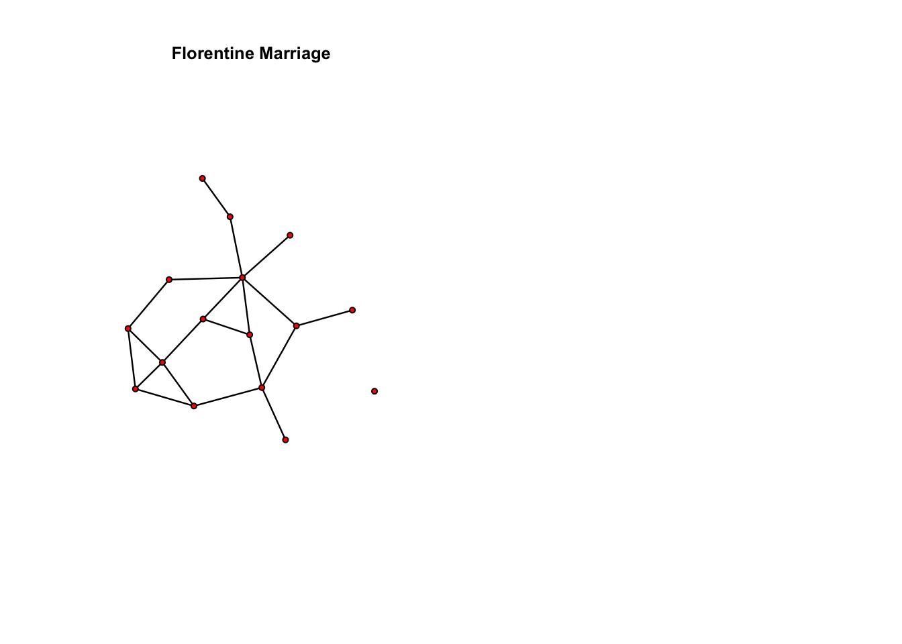

install.packages("sna")
install.packages("network")
install.packages("ergm")
install.packages("coda")
install.packages("knitr")Loading packages in R
library(ergm)
data(florentine)
flomarriage ## Network attributes:
## vertices = 16
## directed = FALSE
## hyper = FALSE
## loops = FALSE
## multiple = FALSE
## bipartite = FALSE
## total edges= 20
## missing edges= 0
## non-missing edges= 20
##
## Vertex attribute names:
## priorates totalties vertex.names wealth
##
## No edge attributespar(mfrow=c(1,2))
plot(flomarriage, main="Florentine Marriage", cex.main=0.8)
summary(flomarriage~edges) ## edges
## 20